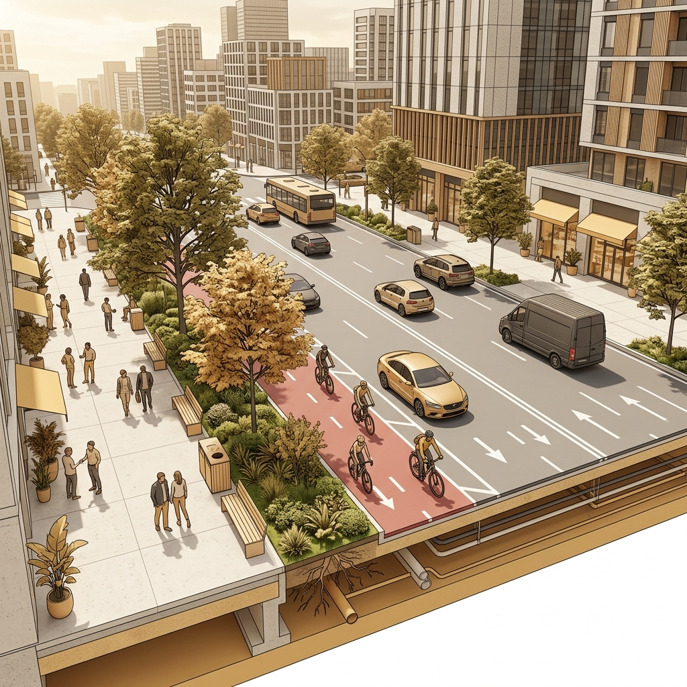
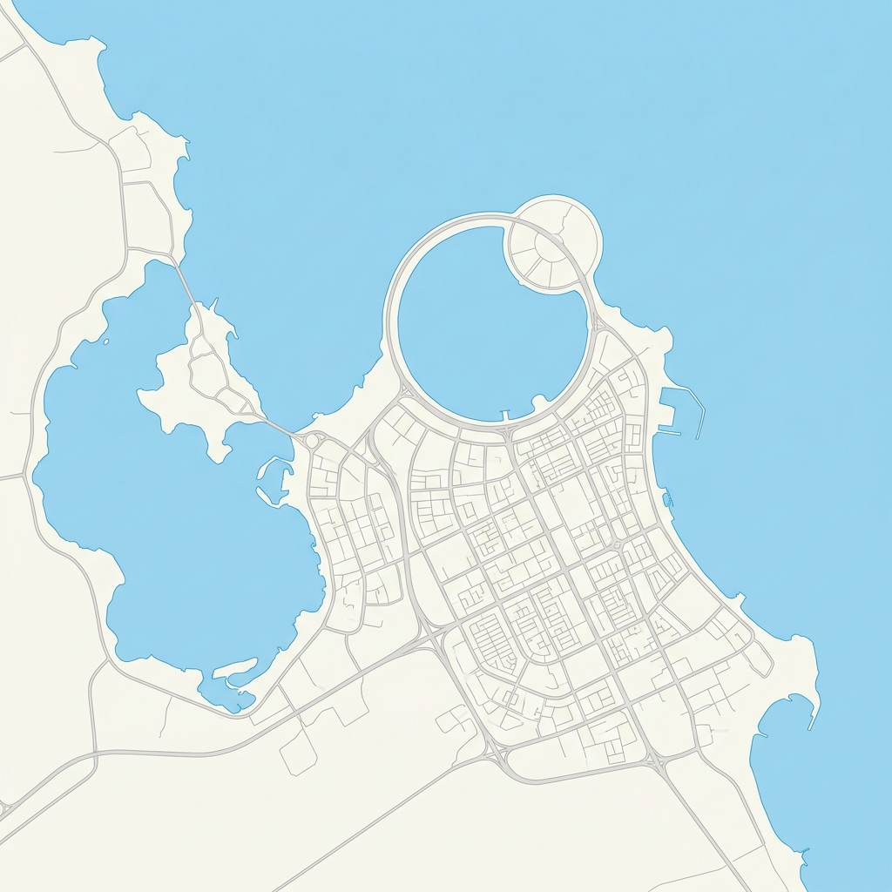

الدليل الشامل لأنسنة المدن والتدخلات الحضرية بالمنطقة الشرقية
منصة تفاعلية تهدف إلى إعادة تعريف الفراغات الحضرية، وتحويل المدن إلى بيئات حيوية تعزز جودة الحياة وتضع الإنسان في قلب العملية التصميمية.


.jpeg)
.jpeg)

يتبنى هذا الدليل نهجاً متكاملاً لتعزيز جودة الفراغات الحضرية بالمنطقة الشرقية، عبر توحيد معايير التصميم والتنفيذ لخلق بيئات مستدامة تضع الإنسان في قلب العملية التطويرية، تحقيقاً لمستهدفات رؤية المملكة 2030 في رفع جودة الحياة وجعل مدننا في مصاف أكثر مدن العالم جاذبية.




مؤشرات رقمية تعكس جهود أمانة المنطقة الشرقية ومستهدفاتها الطموحة نحو تحقيق جودة الحياة وأنسنة المدن.
حديقة ومتنزه عام بمساحة إجمالية تتجاوز 8.2 مليون متر مربع لخدمة الأهالي والزوار.
نصيب الفرد الحالي، بهدف الوصول إلى 9 - 11 م² بحلول 2030 ضمن برنامج جودة الحياة.
من الأرصفة وممرات حركة المشاة الآمنة والمستمرة المتوافقة مع معايير الوصول الشامل.
واجهات بحرية رئيسية ومشاريع بوليفارد كبرى تم تطويرها وتأهيلها بالكامل.
منطقة وحي سكني شهدت تطبيق التدخلات الحضرية الشاملة لتقليص مساحات السيارات لصالح المشاة.
شجرة ومظلة شجرية تم غرسها وتهيئة ظلالها لمقاومة الإجهاد الحراري وتحسين البيئة الحضرية.